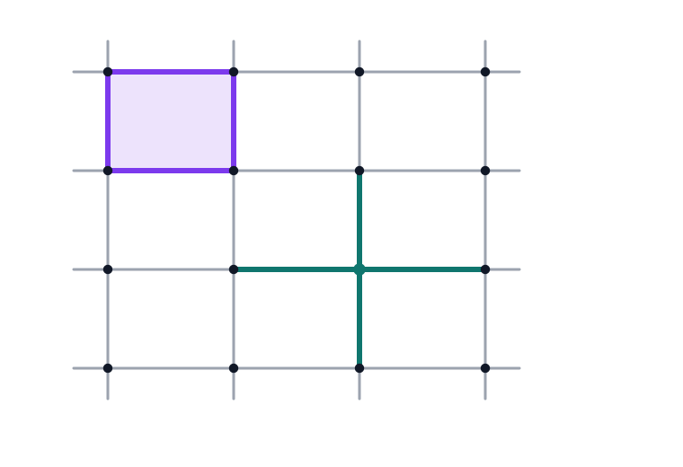
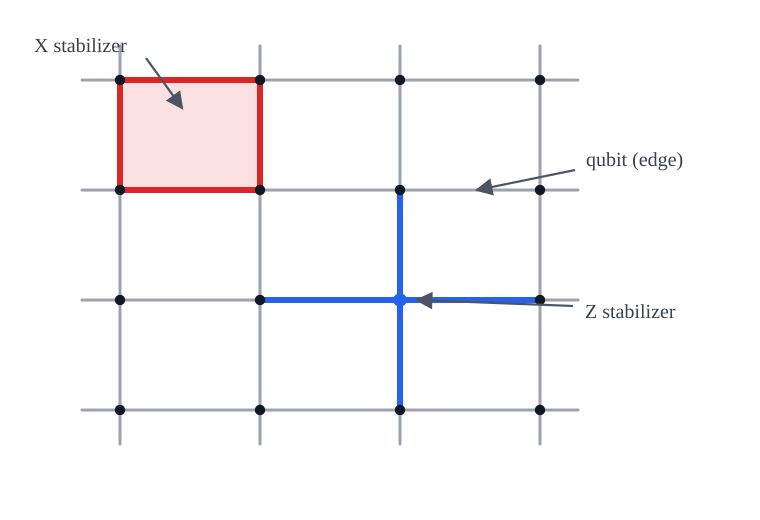
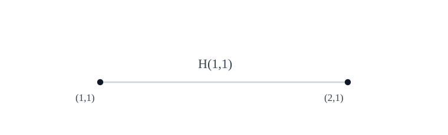
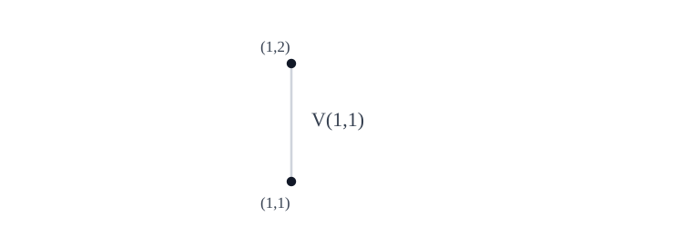
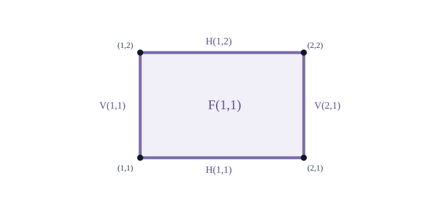
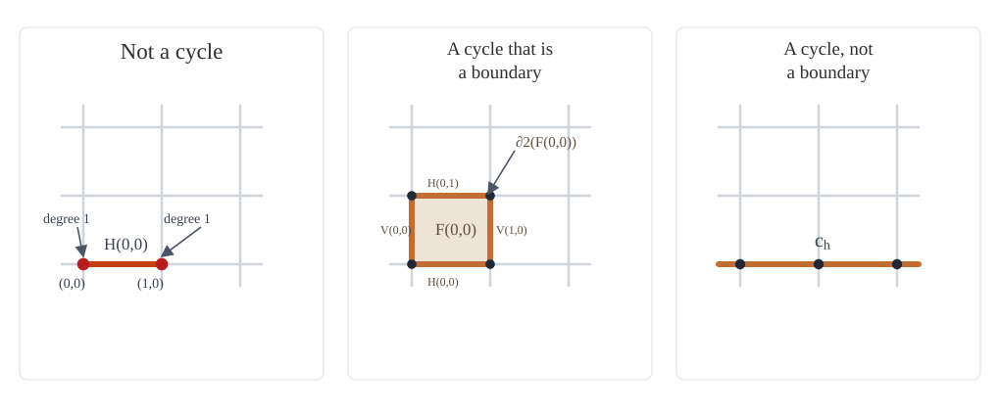

A Topological Proof That the Surface Code Has Distance $L$

From intuition to proof
If you've read an introduction to the toric code — say, Arthur Pesah's excellent interactive post — you've probably seen the claim that the toric code on an $L \times L$ lattice has distance $L$. It's worth examining the standard justification for this claim carefully, because one of its steps is doing more work than it might seem.
The standard argument and its gap
Recall that the distance of a quantum error-correcting code is the minimum weight of any non-trivial logical operator. To show the toric code has distance $L$, we need to verify two things:
- There exists a non-trivial logical operator of weight $L$ (so $d \leq L$).
- Every non-trivial logical operator has weight at least $L$ (so $d \geq L$).
The argument, as typically presented, has three steps:
- Logical operators are loops on the lattice
- There exist non-contractible loops on the lattice of length $L$, giving non-trivial logical operators of weight $L$.
- No non-contractible loop on the lattice has length less than $L$, so no non-trivial logical operator has weight less than $L$.
Steps 1 and 2 are straightforward: Step 1 follows directly from the stabilizer formalism, and Step 2 is proved by exhibiting a specific loop. Step 3 is more subtle: the claim that no non-contractible loop has length less than $L$ is geometrically intuitive but requires a careful argument. It feels obvious — of course you need at least $L$ edges to get around an $L \times L$ torus. But "wrapping all the way around" is doing a lot of informal work here. A non-contractible loop doesn't have to look like a straight horizontal line — it could zig-zag, include vertical segments, wander wildly across the lattice. Why can't some clever squiggly path wrap around the torus using fewer than $L$ edges? The geometric intuition is compelling, but it isn't a proof. The language of homology gives us the tools to make it one: it classifies loops by how they wrap around the torus, turning a geometric question into a linear algebra problem.
What you'll need
- Familiarity with the basic structure of the surface code (lattice, qubits on edges, stabilizers, logical operators). If you need a refresher, Arthur Pesah's interactive introduction to the surface code is a great starting point.
- Familiarity with the stabilizer formalism (stabilizer groups, codespace, logical operators, distance). For a refresher, Arthur Pesah's series on the stabilizer formalism is excellent.
- Basic linear algebra over $\mathbb{F}_2$ (vector spaces, kernels, rank-nullity).
- Familiarity with basic group theory is helpful, but not strictly required.
No prior knowledge of algebraic topology is required — we build up everything we need from scratch.
Roadmap
We proceed as follows. Sections 1–3 set up the lattice, define the chain complex, and introduce cycles, boundaries, and the first homology group $H_1$. Section 4 connects this formalism to the toric code, showing that non-trivial X-type logicals correspond to non-trivial elements of $H_1$, and introduces the dual lattice for Z-type logicals. Section 5 computes $\dim(H_1) = 2$ using rank-nullity. Section 6 defines the invariants $h$ and $v$ and establishes their key properties. Section 7 proves that these invariants give an isomorphism $H_1 \cong \mathbb{F}_2^2$. Finally, Section 8 combines everything to prove that the distance is exactly $L$.
1. The Lattice
We work with the surface code on a torus (periodic boundary conditions), sometimes called the toric code. The lattice is an $L \times L$ square grid, with all arithmetic on coordinates taken modulo $L$.

- Vertices: $(x, y)$ for $x, y \in \{0, 1, \ldots, L-1\}$. There are $L^2$ vertices.
- Edges: Two types.
- Horizontal edges: $H(x, y)$ connects $(x, y)$ to $(x+1, y)$. There are $L^2$ horizontal edges.

Horizontal edge example: $H(1,1)$ connects $(1,1)$ to $(2,1)$. - Vertical edges: $V(x, y)$ connects $(x, y)$ to $(x, y+1)$. There are $L^2$ vertical edges.

Vertical edge example: $V(1,1)$ connects $(1,1)$ to $(1,2)$. - In total, $n = 2L^2$ edges.
- Horizontal edges: $H(x, y)$ connects $(x, y)$ to $(x+1, y)$. There are $L^2$ horizontal edges.
- Faces: $F(x, y)$ is the unit square with corners $(x,y)$, $(x+1,y)$, $(x,y+1)$, $(x+1,y+1)$. There are $L^2$ faces, with boundary edges Bottom $H(x,y)$, Top $H(x,y+1)$, Left $V(x,y)$, Right $V(x+1,y)$.

Face example: $F(1,1)$ with boundary edges $H(1,1)$, $H(1,2)$, $V(1,1)$, and $V(2,1)$.
Each edge borders exactly two faces. Specifically:
- $H(x,y)$ borders faces $F(x,y)$ and $F(x,y-1)$. Equivalently, it is the bottom edge of $F(x,y)$ and the top edge of $F(x,y-1)$.
- $V(x,y)$ borders faces $F(x,y)$ and $F(x-1,y)$. Equivalently, it is the left edge of $F(x,y)$ and the right edge of $F(x-1,y)$.
Each vertex is incident to exactly four edges: $H(x-1,y)$, $H(x,y)$, $V(x,y-1)$, $V(x,y)$.
The toric code places one qubit on each of the $2L^2$ edges and defines:
- X-type (plaquette) stabilizers: For each face $f$, apply $X$ to the four boundary edges of $f$.
- Z-type (vertex) stabilizers: For each vertex $v$, apply $Z$ to the four edges incident to $v$.
Before diving into the algebra, it's worth getting a feel for the lattice. The interactive visualizer below lets you insert errors, apply stabilizers, and see the syndrome — play around before reading on.
Show interactive surface code visualizer
2. The Chain Complex over $\mathbb{F}_2$
Our goal is to reason algebraically about subsets of edges — which ones form closed loops, which ones are the perimeter of a set of faces, and how to tell the difference. To do this, we represent edge-sets (and vertex-sets, and face-sets) as vectors over $\mathbb{F}_2$, and the geometric notion of "taking the boundary" becomes a linear map. This lets us use linear algebra to study the topology of the torus.
The lattice has three kinds of objects, which we organize by dimension: vertices (0-dimensional), edges (1-dimensional), and faces (2-dimensional). We call these 0-cells, 1-cells, and 2-cells respectively.
To reason about them algebraically, we represent subsets of each as vectors over $\mathbb{F}_2 = \{0, 1\}$ (arithmetic mod 2). A $k$-chain is a subset of $k$-cells, where addition corresponds to symmetric difference. The space of $k$-chains is:
- $C_0 = \mathbb{F}_2^{L^2}$: subsets of vertices.
- $C_1 = \mathbb{F}_2^{2L^2}$: subsets of edges.
- $C_2 = \mathbb{F}_2^{L^2}$: subsets of faces.
The weight of a 1-chain $c \in C_1$, denoted $|c|$, is the number of edges it contains.
The key observation is that these three spaces are connected by a chain of linear maps, each going one dimension down: $\partial_2$ sends faces to edges (their perimeter), and $\partial_1$ sends edges to vertices (their endpoints). Together they form the chain complex
$$C_2 \xrightarrow{\partial_2} C_1 \xrightarrow{\partial_1} C_0.$$We define two linear maps.
$\partial_2 : C_2 \to C_1$ sends a single face $F(x,y)$ to the sum of its four boundary edges: $$\partial_2(F(x,y)) = H(x,y) + H(x,y+1) + V(x,y) + V(x+1,y)$$
$\partial_1 : C_1 \to C_0$ sends a single edge to the sum of its two endpoints:
- $\partial_1(H(x,y)) = (x,y) + (x+1,y)$
- $\partial_1(V(x,y)) = (x,y) + (x,y+1)$
Both maps extend linearly. For a subset of faces $\mathcal{F} \subseteq C_2$, we have $\partial_2(\mathcal{F}) = \sum_{f \in \mathcal{F}} \partial_2(f)$ (sum mod 2), so an edge $e$ is in $\partial_2(\mathcal{F})$ if and only if an odd number of faces in $\mathcal{F}$ contain $e$ on their boundary. Since each edge borders exactly two faces, this is equivalent to: $e \in \partial_2(\mathcal{F})$ if and only if exactly one of the two bordering faces is in $\mathcal{F}$.
For a subset of edges $E$, a vertex $v$ is in $\partial_1(E)$ if and only if an odd number of edges in $E$ are incident to $v$.
Example. Let's compute some concrete boundary maps on a 3×3 torus.
First, $\partial_1$ applied to a single edge: $\partial_1(H(0,0)) = (0,0) + (1,0)$. The two endpoints are the only vertices in the boundary.
Next, $\partial_2$ applied to a single face $F(0,0)$: $$\partial_2(F(0,0)) = H(0,0) + H(0,1) + V(0,0) + V(1,0)$$ This is the set of four edges forming the perimeter of the face.
Now consider $\partial_2$ applied to two adjacent faces $F(0,0)$ and $F(1,0)$ (side by side horizontally). Their shared boundary edge is $V(1,0)$. Over $\mathbb{F}_2$: $$\partial_2(F(0,0)) + \partial_2(F(1,0)) = H(0,0) + H(0,1) + V(0,0) + V(1,0) + H(1,0) + H(1,1) + V(1,0) + V(2,0)$$ The edge $V(1,0)$ appears twice and cancels, leaving six edges forming the outer perimeter of the two-face rectangle. This illustrates the general principle: shared (interior) edges always cancel, so $\partial_2(\mathcal{F})$ is the outer boundary of $\mathcal{F}$.
Before defining cycles and boundaries, we establish a key property: applying $\partial_1$ after $\partial_2$ always gives zero. This is the algebraic expression of the geometric fact that the boundary of a boundary is empty — the perimeter of any set of faces has no dangling endpoints.
3. Cycles, Boundaries, and Homology
With the boundary maps in hand, we can now name the two kinds of edge-sets that matter for the toric code. A cycle is an edge-set with no dangling ends — every vertex has even degree. This includes single closed loops, disjoint unions of loops, and even the empty set. A boundary is the perimeter of some set of faces — a cycle that can be built by combining face boundaries. Every boundary is automatically a cycle (perimeters don't have dangling ends), but the converse fails: some cycles wrap around the torus without being the boundary of any set of faces. These non-boundary cycles are exactly the non-trivial logical operators of the code, and measuring "how many" of them there are is the purpose of the first homology group.
- $Z_1 = \ker(\partial_1) \subseteq C_1$: the space of 1-cycles.
- $B_1 = \operatorname{im}(\partial_2) \subseteq C_1$: the space of 1-boundaries.
Example. We illustrate these definitions on a 3×3 torus.
An edge-set that is not a cycle: Take the single edge $H(0,0)$. The vertices $(0,0)$ and $(1,0)$ each have degree 1 in this edge-set — odd — so the cycle condition fails. This edge-set is not in $Z_1$.
A cycle that is a boundary: Take the four edges forming the perimeter of face $F(0,0)$: $\{H(0,0), H(0,1), V(0,0), V(1,0)\}$. Every vertex has degree 0 or 2 (the four corners each have degree 2), so this is a cycle. It equals $\partial_2(F(0,0))$, so it is also a boundary: it lies in $B_1$.
A cycle that is not a boundary: Take the horizontal loop $c_h = \{H(0,0), H(1,0), H(2,0)\}$, the full row of horizontal edges at $y=0$. Every vertex on row $y=0$ has degree 2, and all other vertices have degree 0, so $c_h \in Z_1$. But $c_h \notin B_1$.

We can also see this geometrically: $\partial_2(\mathcal{F})$ consists of all edges bordering exactly one face of $\mathcal{F}$. At any vertex $v$, consider the (up to four) faces meeting at $v$. Each face in $\mathcal{F}$ that meets $v$ contributes exactly 2 of its boundary edges incident to $v$. Over $\mathbb{F}_2$, each such face contributes an even number of incident boundary-edges in $\partial_2(\mathcal{F})$. The total count of edges of $\partial_2(\mathcal{F})$ incident to $v$ is a sum of even numbers, hence even.
Since two cycles that differ by a boundary represent the same logical operator, we want to group them together. The right algebraic structure for this is the quotient $Z_1 / B_1$, which we call the first homology group.
Two cycles $c, c'$ are homologous ($c \sim c'$) if $c + c' \in B_1$. They represent the same coset of $H_1$.
4. Connection to the Toric Code
We now connect the homological machinery of Sections 2–3 to the toric code defined in Section 1. The punchline: non-trivial X-type logicals correspond exactly to non-trivial elements of $H_1$ (cycles that aren't boundaries), and the same holds for Z-type logicals on the dual lattice. This means the distance question — "what is the minimum-weight non-trivial logical?" — becomes a question about homology: "what is the minimum-weight non-trivial cycle?"
4.1 X-type logicals as non-trivial cycles
An X-type Pauli operator is specified by an edge-subset $c$ (apply $X$ to edges in $c$ and $I$ elsewhere). We now show that the X-type logical operators correspond exactly to non-trivial elements of $H_1$.
The overlap $|c \cap \operatorname{supp}(v)|$ is exactly the number of edges in $c$ incident to $v$. So the X-type operator on $c$ commutes with the vertex stabilizer at $v$ if and only if $v$ has even degree in $c$. This holds for all $v$ if and only if $c \in Z_1$. $\square$
Combining these:
- An X-type operator on $c$ is an X-type stabilizer if and only if $c \in B_1$.
- An X-type operator on $c$ is a non-trivial X-type logical operator if and only if $c \in Z_1 \setminus B_1$, i.e., $c$ represents a non-trivial element of $H_1$.
Since the toric code is a CSS code, we can define the X-distance $d_X$ and Z-distance $d_Z$ separately: $d_X$ is the minimum weight of a non-trivial X-type logical operator, and $d_Z$ is the minimum weight of a non-trivial Z-type logical operator. (We will show in Section 8.3 that the full distance satisfies $d = \min(d_X, d_Z)$.) By the correspondence above, the X-distance is: $$d_X = \min\{|c| : c \in Z_1 \setminus B_1\}$$ i.e., the minimum weight of a non-trivial cycle (one that is not a boundary).
4.2 Z-type logicals and the dual lattice
By a completely analogous argument, Z-type logical operators correspond to non-trivial cycles of a dual chain complex. We now make this precise.
- Placing a dual vertex $f^*$ at the center of each face $f$. There are $L^2$ dual vertices.
- For each edge $e$ of the primal lattice, placing a dual edge $e^*$ connecting the dual vertices corresponding to the two faces that border $e$. There are $2L^2$ dual edges (one for each primal edge).
- Each primal vertex $v$, which is surrounded by four faces, becomes a dual face $v^*$ bounded by the four dual edges corresponding to the primal edges incident to $v$.
The dual lattice is again an $L \times L$ square lattice on a torus: $L^2$ dual vertices, $2L^2$ dual edges, and $L^2$ dual faces, with the same local structure (every dual vertex has degree 4, every dual face has 4 boundary edges).
The key correspondence. A Z-type operator on primal edge-set $c$ applies $Z$ to each edge in $c$. It commutes with all X-type (plaquette) stabilizers if and only if, for every face $f$, the number of edges of $c$ on the boundary of $f$ is even. Under the primal-to-dual correspondence $e \leftrightarrow e^*$, this is exactly the condition that the dual edge-set $c^* = \{e^* : e \in c\}$ has even degree at every dual vertex — i.e., $c^*$ is a cycle in the dual lattice.
Similarly, the Z-type operator on $c$ is a product of vertex stabilizers if and only if $c^*$ is a boundary in the dual lattice (since each primal vertex stabilizer corresponds to the boundary of a dual face).
Therefore, $d_Z$ equals the minimum weight of a non-trivial cycle in the dual lattice. We will return to this in Section 8.3. For now, we focus on proving $d_X = L$, which occupies Sections 5–8.2.
5. Dimension of $H_1$
How many independent non-contractible loops does the torus have? Geometrically, the answer is clearly 2: one wrapping horizontally and one wrapping vertically. We prove this rigorously by computing $\dim(H_1) = 2$. This tells us the toric code encodes $k = 2$ logical qubits, and $H_1$ has exactly $2^2 = 4$ cosets to classify.
Since $H_1 = Z_1/B_1$ is a quotient of finite-dimensional vector spaces and $B_1 \subseteq Z_1$, we have $\dim(H_1) = \dim(Z_1) - \dim(B_1)$. So we need $\dim(Z_1)$ and $\dim(B_1)$ separately. Our main tool is rank-nullity.
5.1 Background: rank-nullity
In other words: the dimension of the domain splits into two pieces — the dimension of what $T$ kills (the kernel) and the dimension of what survives in the image.
We also use one fact about transpose maps over $\mathbb{F}_2$. A linear map $T: V \to W$ between finite-dimensional $\mathbb{F}_2$-vector spaces is represented by a matrix $M$; the transpose $T^T: W \to V$ is represented by $M^T$. The key property we need is:
5.2 Computing $\dim(Z_1)$
$Z_1 = \ker(\partial_1)$. By rank-nullity applied to $\partial_1$: $2L^2 = \dim(Z_1) + \operatorname{rank}(\partial_1)$. Rather than computing $\operatorname{rank}(\partial_1)$ directly, it is easier to compute $\operatorname{rank}(\partial_1^T)$ (which is equal) and then find $\dim(\ker(\partial_1^T))$ using rank-nullity.
What does $\partial_1^T$ do? Since $\partial_1: C_1 \to C_0$ maps edge-space to vertex-space, its transpose $\partial_1^T: C_0 \to C_1$ maps vertex-space to edge-space. Concretely, $\partial_1$ is represented by a matrix $M$ with $M_{v,e} = 1$ iff $v$ is an endpoint of $e$; the transpose $M^T$ has $M^T_{e,v} = 1$ iff $v$ is an endpoint of $e$. So $\partial_1^T$ maps a subset of vertices $S$ to the set of edges with an odd number of endpoints in $S$. Since every edge has exactly two endpoints, this is the set of edges with exactly one endpoint in $S$ — the edge cut (or coboundary) of $S$.
5.3 Computing $\dim(B_1)$
$B_1 = \operatorname{im}(\partial_2)$, so $\dim(B_1) = \operatorname{rank}(\partial_2)$. By rank-nullity: $L^2 = \dim(\ker(\partial_2)) + \dim(B_1)$.
5.4 The dimension of $H_1$
Since $H_1$ is a 2-dimensional vector space over $\mathbb{F}_2$, it has exactly $2^2 = 4$ elements (cosets).
6. The Invariants $h$ and $v$
We know from Theorem 5.6 that $H_1$ is a 2-dimensional vector space over $\mathbb{F}_2$, so it has exactly 4 elements (cosets). But the dimension count alone doesn't tell us how to distinguish these cosets — given a cycle, how can we tell which coset it belongs to?
To answer this, we need concrete invariants: quantities that we can compute from a cycle $c$ that (a) depend only on the coset of $c$ (i.e., don't change when we add a boundary), and (b) take different values on different cosets.
The idea is geometric. On the torus, a non-trivial cycle must "wrap around" in at least one direction. We can detect this wrapping by counting how many times a cycle crosses a given "slice" of the torus. Concretely, we define two parity-valued invariants — $h(c)$ and $v(c)$ — that detect horizontal and vertical wrapping respectively. Together, they give a complete classification of cosets and, crucially, a tool for proving the distance lower bound.
6.1 Definitions
We use the notation $[P]$ for the Iverson bracket: $[P] = 1$ if the statement $P$ is true, and $[P] = 0$ otherwise. For example, $[H(x_0, y) \in c]$ is 1 if the edge $H(x_0, y)$ belongs to $c$, and 0 otherwise.
Example. We compute $h$ and $v$ for three cycles on a 3×3 torus.
The horizontal loop $c_h = \{H(0,0), H(1,0), H(2,0)\}$: At each $x$-coordinate $x_0 \in \{0,1,2\}$, there is exactly one horizontal edge of $c_h$ — namely $H(x_0, 0)$. So $h_{x_0}(c_h) = 1$ for all $x_0$, giving $h(c_h) = 1$. Since $c_h$ contains no vertical edges, $v(c_h) = 0$.
A squiggly homologous cycle $c' = c_h + \partial_2(F(0,0))$: Adding the boundary of $F(0,0)$ to $c_h$ gives $c' = \{H(0,1), H(1,0), H(2,0), V(0,0), V(1,0)\}$ — a cycle with a detour around the face $F(0,0)$. Despite its different shape, $h(c') = 1$ and $v(c') = 0$: the same as $c_h$. This illustrates that $h$ and $v$ depend only on the homology class, not the specific representative.
The boundary $\partial_2(F(0,0)) = \{H(0,0), H(0,1), V(0,0), V(1,0)\}$: At $x_0 = 0$, there are two horizontal edges: $H(0,0)$ and $H(0,1)$. Two is even, so $h_0(\partial_2(F(0,0))) = 0$. At all other $x$-coordinates, there are no horizontal edges. So $h(\partial_2(F(0,0))) = 0$, and similarly $v(\partial_2(F(0,0))) = 0$, consistent with Lemma 6.3.
6.2 Independence of coordinate choice
- $H(x_0, y)$ — a horizontal edge at $x$-coordinate $x_0$
- $H(x_0+1, y)$ — a horizontal edge at $x$-coordinate $x_0 + 1$
- $V(x_0+1, y-1)$ — a vertical edge
- $V(x_0+1, y)$ — a vertical edge
For cycles we write simply $h(c)$ and $v(c)$ since the values are coordinate-independent.
6.3 Invariance under adding boundaries
7. The Isomorphism $H_1 \cong \mathbb{F}_2^2$
We have established two things so far: $H_1$ is a 2-dimensional $\mathbb{F}_2$-vector space (Section 5), and we have a well-defined linear map $\varphi: H_1 \to \mathbb{F}_2^2$ that assigns to each cycle its $(h, v)$ invariants (Section 6). We now show that $\varphi$ is an isomorphism. This means the invariants $h$ and $v$ completely classify the cosets of $H_1$: two cycles are homologous if and only if they have the same $(h, v)$ values. This is the key fact that enables the distance proof in Section 8, because it guarantees that every non-trivial cycle has $h = 1$ or $v = 1$ (or both), and we will show that either condition forces the cycle to have weight at least $L$.
Representative for $(1,0)$: Let $c_h = \{H(x,0) : x=0,\ldots,L-1\}$, the horizontal loop along row $y=0$.
- $c_h$ is a cycle: At any vertex $(x,y)$, the edges of $c_h$ incident to it are $H(x-1,0)$ and $H(x,0)$ if $y = 0$, and none otherwise. In either case, the count is even (2 or 0).
- $h(c_h) = 1$: At $x$-coordinate $x_0$, the only horizontal edge of $c_h$ is $H(x_0, 0)$. So $h_{x_0}(c_h) = 1$.
- $v(c_h) = 0$: $c_h$ contains no vertical edges.
- $c_h$ is not a boundary: By Lemma 6.3, every boundary $b$ has $h(b) = 0$. Since $h(c_h) = 1$, $c_h$ cannot be a boundary.
Therefore $\varphi([c_h]) = (1,0)$.
Representative for $(0,1)$: Let $c_v = \{V(0,y): y=0,\ldots,L-1\}$, the vertical loop along column $x=0$. By an analogous argument, $c_v$ is a cycle with $\varphi([c_v]) = (0,1)$, and $c_v \notin B_1$ since $v(c_v) = 1$ while $v(b) = 0$ for all boundaries.
Representative for $(1,1)$: $c_{hv} = c_h + c_v$ (symmetric difference). By linearity of $\varphi$: $$\begin{aligned} \varphi([c_{hv}]) &= (1,0)+(0,1) \\ &= (1,1). \end{aligned}$$ Also, $c_{hv} \notin B_1$ since $\varphi([c_{hv}]) \neq (0,0)$ while $\varphi$ sends all boundaries to $(0,0)$.
Thus $\varphi$ is surjective, hence an isomorphism. $\square$8. The Distance Theorem
We now have all the tools. The isomorphism $\varphi: H_1 \to \mathbb{F}_2^2$ tells us every non-trivial cycle has $h(c)=1$ or $v(c)=1$ (or both). Lemma 6.2 says this parity is the same across all $L$ slices. Together, these force every non-trivial cycle to contribute at least one edge to each of $L$ disjoint sets.
8.1 Upper bound: $d_X \leq L$
The horizontal loop $c_h = \{H(x,0): x=0,\ldots,L-1\}$ is non-trivial with $|c_h| = L$, so $d_X \leq L$.
8.2 Lower bound: $d_X \geq L$
Let $c \in Z_1 \setminus B_1$. Since $\varphi$ is injective and $c \notin B_1$, we have $\varphi([c]) \neq (0,0)$, so $h(c)=1$ or $v(c)=1$.
Case 1: $h(c) = 1$. Define $S_x = \{H(x,y): y = 0,\ldots,L-1\}$ for each $x$. These $L$ sets are pairwise disjoint. By Lemma 6.2, the parity of $|c \cap S_x|$ equals $h(c) = 1$ for every $x$, so $|c \cap S_x| \geq 1$ for each $x$. Therefore: $$|c| \geq \sum_{x=0}^{L-1} |c \cap S_x| \geq L$$
Case 2: $v(c) = 1$. The same argument with $T_y = \{V(x,y): x=0,\ldots,L-1\}$ gives $|c| \geq L$. $\square$
8.3 Z-type logicals and the full distance
Decomposition. Any $n$-qubit Pauli $P$ can be written (up to a global phase $\pm 1, \pm i$) as $$P = X^a Z^b,$$ where $a, b \in \mathbb{F}_2^n$ and $$X^a = X_1^{a_1} \otimes \cdots \otimes X_n^{a_n}$$ (similarly for $Z^b$). Write $\operatorname{supp}(a) = \{i : a_i = 1\}$ for the support of $a$. The weight of $P$ is $|\operatorname{supp}(a) \cup \operatorname{supp}(b)|$, since $P$ acts as identity on qubit $i$ only when $$a_i = b_i = 0.$$
Commutation. In a CSS code, every stabilizer generator is either purely X-type or purely Z-type. We use two facts:
- $X^a Z^b$ commutes with an X-type operator $X^s$ iff $|\operatorname{supp}(b) \cap \operatorname{supp}(s)|$ is even. (The $X^a$ part always commutes with $X^s$; the $Z^b$ part anticommutes on each qubit where both act, contributing $(-1)^{|\operatorname{supp}(b) \cap \operatorname{supp}(s)|}$.)
- $X^a Z^b$ commutes with a Z-type operator $Z^t$ iff $|\operatorname{supp}(a) \cap \operatorname{supp}(t)|$ is even.
Therefore, $$\begin{aligned} P = X^a Z^b \text{ commutes with all stabilizers} \iff&\ a \text{ commutes with all Z-type stabilizers} \\ &\text{and } b \text{ commutes with all X-type stabilizers}. \end{aligned}$$ Equivalently, $a \in Z_1$ and $b \in Z_1^*$ (the cycle space of the dual lattice). This decoupling is specific to CSS codes.
Non-triviality. In a CSS code, the stabilizer group factors as products of X-type and Z-type stabilizers. So $$\begin{aligned} P = X^a Z^b \text{ is a stabilizer} \iff&\ X^a \text{ is a product of X-type stabilizers } (a \in B_1) \\ &\text{and } Z^b \text{ is a product of Z-type stabilizers } (b \in B_1^*). \end{aligned}$$ Taking the contrapositive: $P$ is a non-trivial logical iff it commutes with all stabilizers and at least one of $a \in Z_1 \setminus B_1$ or $b \in Z_1^* \setminus B_1^*$ holds.
Lower bound: $$\begin{aligned} a \in Z_1\setminus B_1 &\implies \operatorname{wt}(P) \ge |a| \ge d_X, \\ b \in Z_1^*\setminus B_1^* &\implies \operatorname{wt}(P) \ge |b| \ge d_Z. \end{aligned}$$ Since at least one holds, $\operatorname{wt}(P) \ge \min(d_X,d_Z)$.
Upper bound: a minimum-weight non-trivial X-type logical has weight $d_X$, so $d \le d_X$; similarly $d \le d_Z$. Therefore $$d = \min(d_X, d_Z).$$ $\square$
As shown in Section 4.2, Z-type logical operators correspond to non-trivial cycles in the dual lattice, and the dual lattice of the $L \times L$ torus is again an $L \times L$ torus with the same combinatorial structure. Therefore the entire argument of Sections 5–8.2 applies verbatim, yielding $d_Z = L$. Thus:
$$\begin{aligned} d &= \min(d_X, d_Z) \\ &= \min(L, L) \\ &= L. \end{aligned}$$The toric code is a $[[2L^2, 2, L]]$ code: $n = 2L^2$ physical qubits, $k = 2$ logical qubits, $d = L$. $\quad\blacksquare$
Conclusion
The proof rested on a single key idea: defining invariants $h$ and $v$ that detect whether a cycle wraps around the torus horizontally or vertically. These invariants are well-defined on homology classes, completely classify the four cosets of $H_1$, and force any non-trivial cycle to contain at least $L$ edges, because the regular structure of the square lattice guarantees $L$ disjoint "slices" each contributing at least one edge.
The deeper lesson is that the distance of the toric code is a topological fact, not a combinatorial coincidence. The number of logical qubits comes from $\dim(H_1)$, and the distance comes from the minimum weight of a non-trivial homology class. This is why the proof naturally lives in the language of homology rather than, say, case analysis on paths.
This perspective generalizes far beyond the square lattice. The entire framework — qubits on $k$-cells, stabilizers from boundary maps, logical operators from non-trivial homology classes — works for any cellulation of any manifold in any dimension. The distance question becomes a question about the systole: the shortest non-trivial cycle. This is the foundation for hyperbolic codes, higher-dimensional toric codes, and the broader family of homological codes.
That said, the specific argument we used for the lower bound — partitioning edges into $L$ disjoint slices with odd parity — exploits the regular structure of the $L \times L$ square lattice. For other manifolds or irregular cellulations, computing the distance can be significantly harder, and is in general an NP-hard problem. Even for close relatives of the toric code, modifications are needed: the planar and rotated surface codes have different boundary conditions that change the homology (from $H_1 \cong \mathbb{F}_2^2$ to $H_1 \cong \mathbb{F}_2$), and the distance argument must account for paths that terminate at boundaries rather than wrapping around.
Further reading
- Arthur Pesah's interactive introduction to the surface code — broader picture including planar/rotated variants, decoding, thresholds.
- Arthur Pesah's series on the stabilizer formalism — algebraic foundations.
- Alice Wang's REU paper — another rigorous treatment using the homological framework.
- Nikolas Breuckmann's thesis, Homological Quantum Codes Beyond the Toric Code — homological codes on general manifolds and systolic geometry.